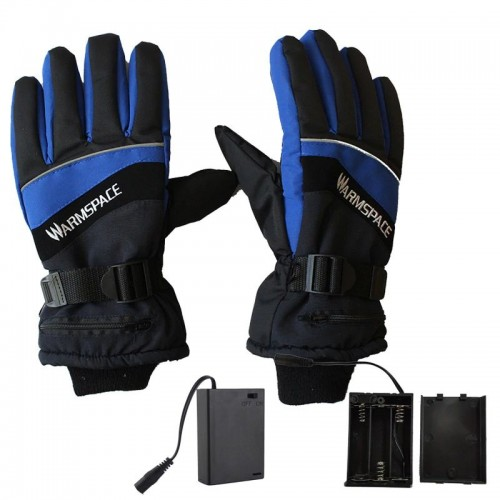

Elektroninės Svarstyklės | Kelioninės svarstyklės - Euro Prekės
 × Automobiliams Auto magnetolos Auto žibintai Laikiliai Moduliatoriai Vaizdo registratoriai Kitos auto prekės Darbui Įrankiai Testeriai Termometrai Kiti darbo įrankiai Elektronika Smulki eletronika Baterijos Durų skambučiai Kameros Reklama Skaičiuotuvai Ventiliatoriai Kompiuteriams Klaviatūros Pelytės Pakrovėjai Kiti priedai Kolonėlės ir muzika FM radio grotuvai Garso kolonėlės Mikrofonai Telefonams Ausinės Atminties kortelės ir USB atmintukai Laidai, krovikliai ir jungtys Laisvų rankų įranga Telefono laikikliai Selfie lazdos Laikrodžiai Išmanieji Staliniai Grožiui Barzdaskutės Fenai Gyvunų kirpimo mašinėlės Padidinimo stiklai Plaukų kirpimo mašinėlės Spaudimo matuokliai Termometrai Sodui ir namams Spynos Š viestuvai Prožektoriai ant galvos Rankiniai prožektoriai Stalinės lempos Darbo šviestuvai Kiti šviestuvai Š ildytuvai ir degikliai Dujos Dujų degikliai Š ildytuvai Vandens šildytuvai Turistinės dujinės viryklės Žiebtuvėliai Vaikams Lazeriai Paspirtukai ir dviračiai Žaislai Virtuvei Arbatinukai Keptuvės Puodai Peiliai Rinkiniai Rinkiniai Smulki buitinė technika Kitos virtuvės prekės Žvejybai Ritės Meškerės Valai Stovai ir laikikliai Kėdės ir gultai Jaukai, masalai ir priedai Signalizatoriai ir kibimo indikatoriai Dėklai, tašės ir kurpinės Graibštai ir sieteliai Apranga ir avalynė Kitos žūklės prekės Žieminės prekės Mano paskyra ×What are you looking for?
Mano paskyra Automobiliams Auto magnetolos Auto žibintai Laikiliai Moduliatoriai Vaizdo registratoriai Kitos auto prekės Darbui Įrankiai Testeriai Termometrai Kiti darbo įrankiai Elektronika Smulki eletronika Baterijos Durų skambučiai Kameros Reklama Skaičiuotuvai Ventiliatoriai Kompiuteriams Klaviatūros Pelytės Pakrovėjai Kiti priedai Kolonėlės ir muzika FM radio grotuvai Garso kolonėlės Mikrofonai Telefonams Ausinės Atminties kortelės ir USB atmintukai Laidai, krovikliai ir jungtys Laisvų rankų įranga Telefono laikikliai Selfie lazdos Laikrodžiai Išmanieji Staliniai Grožiui Barzdaskutės Fenai Gyvunų kirpimo mašinėlės Padidinimo stiklai Plaukų kirpimo mašinėlės Spaudimo matuokliai Termometrai Sodui ir namams Spynos Š viestuvai Prožektoriai ant galvos Rankiniai prožektoriai Stalinės lempos Darbo šviestuvai Kiti šviestuvai Š ildytuvai ir degikliai Dujos Dujų degikliai Š ildytuvai Vandens šildytuvai Turistinės dujinės viryklės Žiebtuvėliai Vaikams Lazeriai Paspirtukai ir dviračiai Žaislai Virtuvei Arbatinukai Keptuvės Puodai Peiliai Rinkiniai Rinkiniai Smulki buitinė technika Kitos virtuvės prekės Žvejybai Ritės Meškerės Valai Stovai ir laikikliai Kėdės ir gultai Jaukai, masalai ir priedai Signalizatoriai ir kibimo indikatoriai Dėklai, tašės ir kurpinės Graibštai ir sieteliai Apranga ir avalynė Kitos žūklės prekės Žieminės prekės 0Krepšelis
Pradžia / Virtuvė / Kitos virtuvės prekės / Elektroninės Svarstyklės | Kelioninės svarstyklėsElektroninės Svarstyklės | Kelioninės svarstyklės
€ 3.99
Savybės:
◠Tikslus matavimas ir aiškus ekranas
◠Ultra kompaktiškos, nešiojamos, atsparios smūgiams
◠Multifunkcinės, galima matuoti svorį su taros funkcija,
◠Automatinis išsijungimas ir svorio vienetų konvertavimas
Techninės savybės:
● Baterijos: 2x AAA (pridedamos)
● Maksimalus svoris: 40kg
● Tikslumas: 10g
● Matavimo vienetai: kg, lb, oz
Aprašymas
Pasirūpinkite, kad Jūsų kelionės būtų sklandžios ir be jokio streso! Kiekvienas bent kartą keliavęs lėktuvu yra susidūręs su problema kaip tiksliai apskaičiuoti bagažo svorį, optimaliai susikrauti lagaminą ir neviršyti oro linijų kompanijų nustatytų svorio limitų. Nemokėkite už bagažo viršsvorį! Š iandien pristatome nepakeičiamą ir kiekvienuose namuose praversiantį prietaisą – rankines svarstykles. Elektroninės svarstyklės greitai ir tiksliai nustatys Jūsų bagažo svorį ir padės užtikrinti sklandžias atostogų, darbo ar apsipirkimo užsienyje keliones! Elektronines svarstykles galėsite naudoti ir sveriant kitus daiktus, sveriančius nuo vos kelių gramų iki 40 kg šis prietaisas itin pravers sode, buityje, žvejyboje sveriant žuvį ar medžioklėje.
Atsiliepimai
Atsiliepimų dar nėra.
Būkite pirmas aprašęs “Elektroninės Svarstyklės | Kelioninės svarstyklės” Atšaukti atsakymąBrukalų kiekiui sumažinti šis tinklalapis naudoja Akismet. Sužinokite, kaip apdorojami Jūsų komentarų duomenys .
Panašūs produktai
Add to wishlistNerūdijančio plieno 6 vienetų puodų rinkinys zl-8109
€ 59.99 Į krepšelį Add to wishlistKeptuvė marmurine danga 28cm ZL-7029
€ 25.99 Į krepšelį Add to wishlistNerūdijančio plieno puodas su marmuro danga 1.3l 16cm ZILNER ZL-7004
€ 14.99 Į krepšelį Add to wishlistMarmuro 4vnt puodų rinkinys su dangčiais zl- 7025
€ 64.99 Į krepšelįSekite Facebook
Kontaktai
Euro Prekės
+370 671 01702
+370 674 48925
info@europrekes.lt